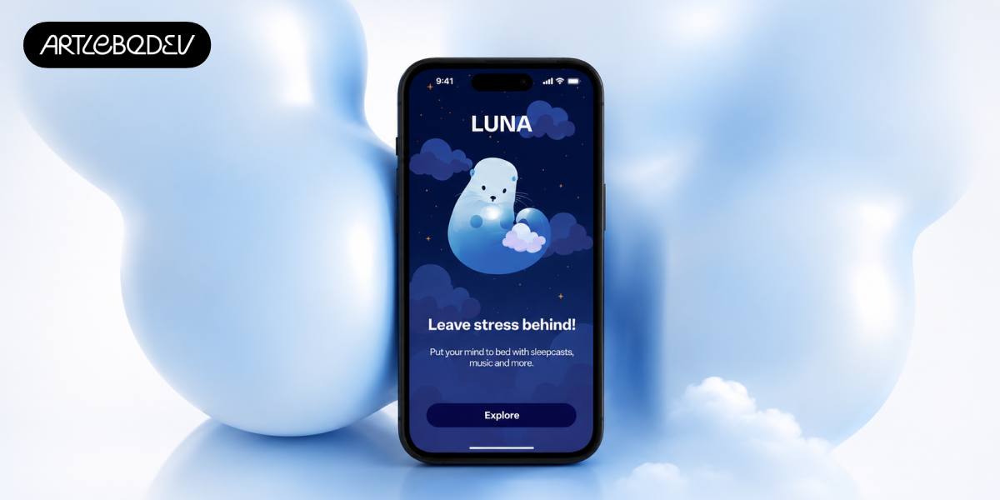
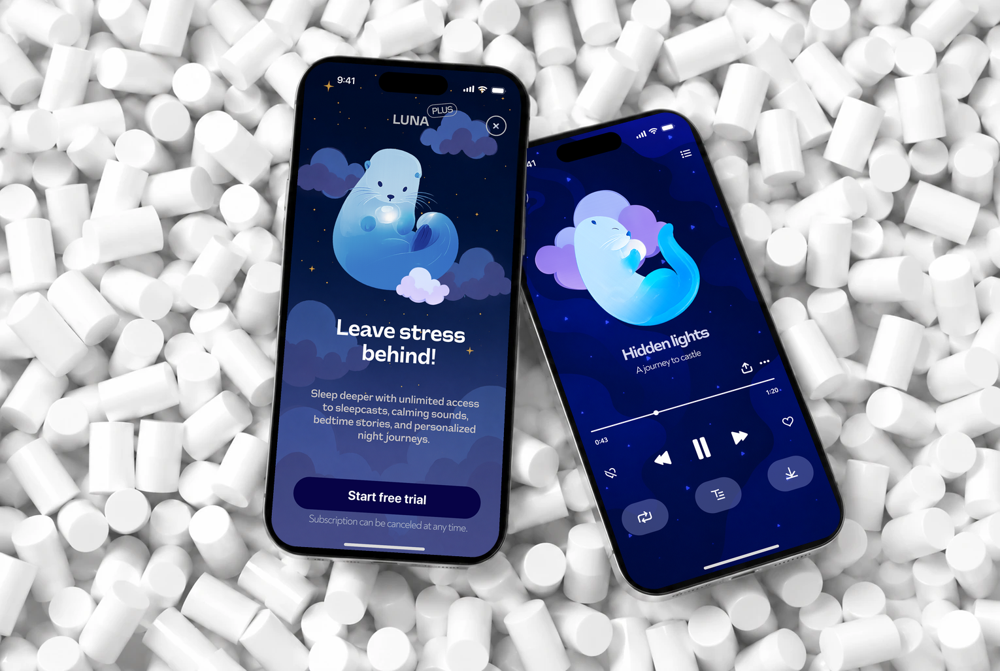
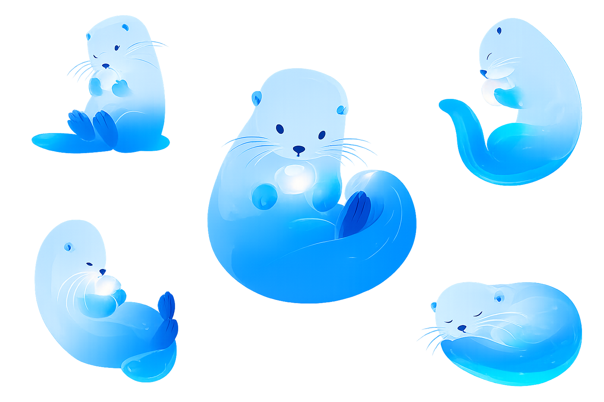
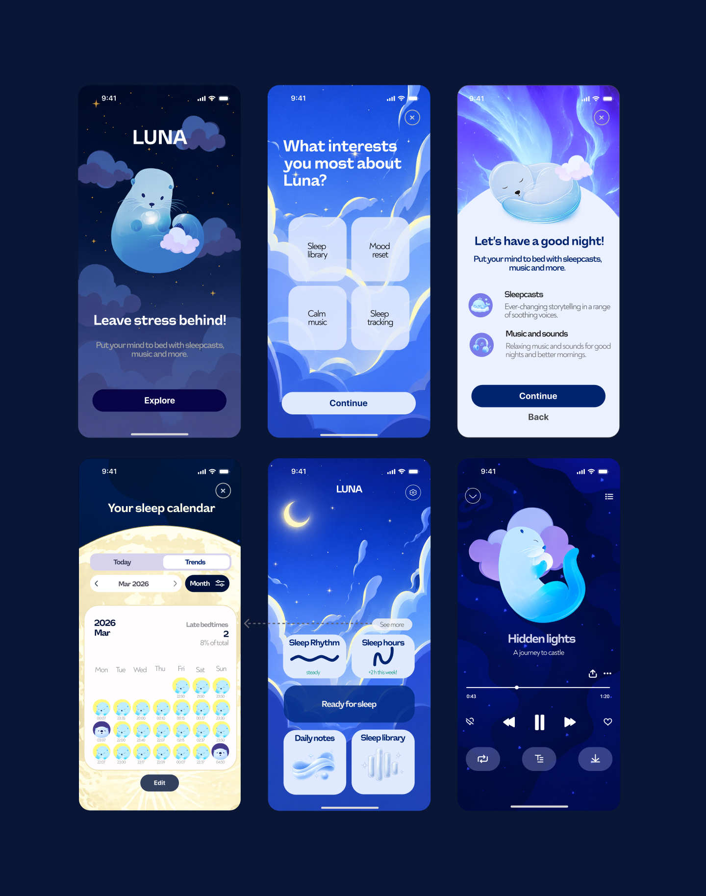
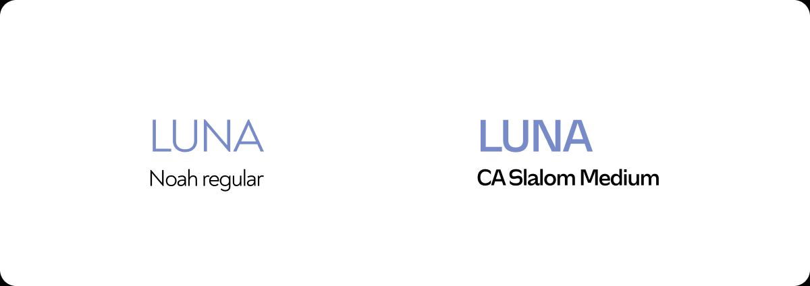
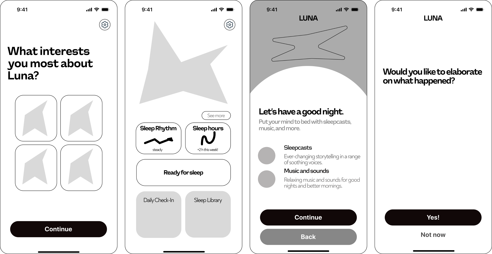
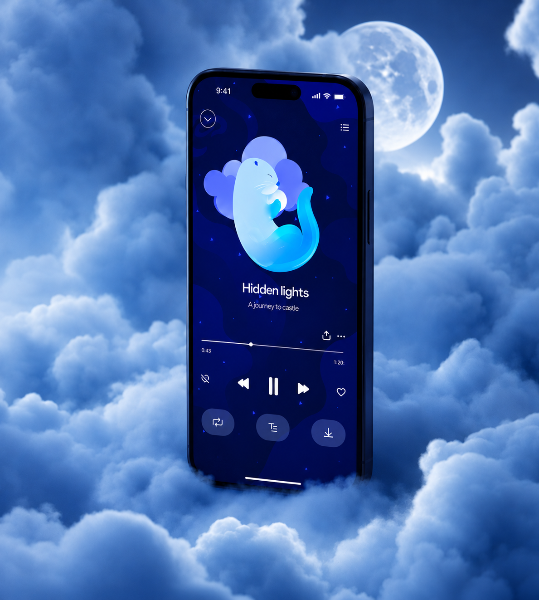
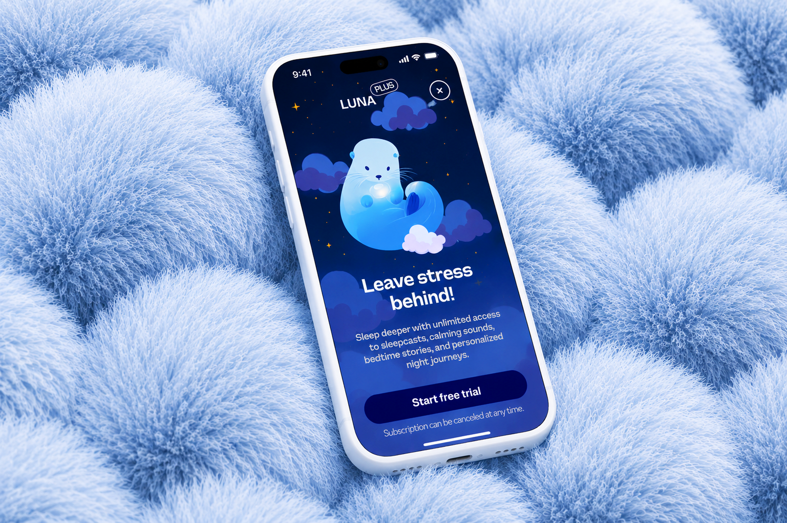
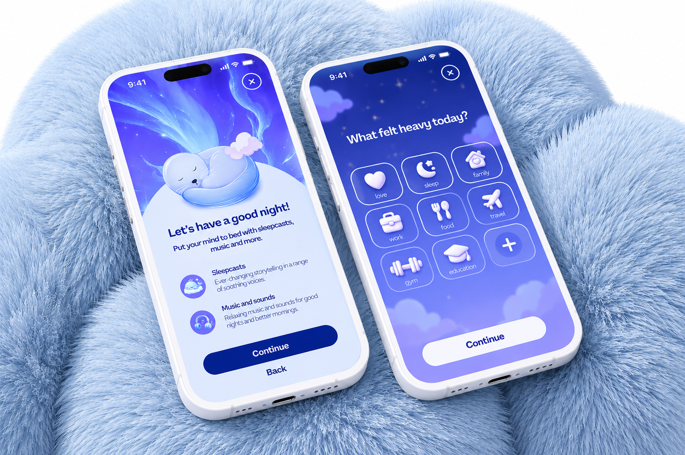

МИССИЯ
Помочь держаться на плаву в мире постоянной стимуляции и вернуть контроль над внутренним миром.

Приложение для осознанного сна. Задача — вернуть человеку контроль над ночью: спокойный сценарий завершения дня.

Выдра — символ спокойствия и естественного ритма сна: спит на воде, между движением и полным расслаблением. Почти как состояние между реальностью и сновидением.


Проанализировала контент и сформулировала боли аудитории. Главный инсайт: людям не хватает понятного сценария завершения дня — вместо отдыха они продолжают потреблять контент.
Отказалась от классических медитаций и дыхательных практик: они требуют высокой вовлеченности и надоедают после первых сессий.
Ночное небо, отраженное в воде: глубокий синий для фона, лунный перивинкл для акцентов, лавандовые облака.
Помочь держаться на плаву в мире постоянной стимуляции и вернуть контроль над внутренним миром.
Мир, в котором люди не борются с мыслями перед сном.
Океан может быть бесконечным и все равно безопасным — глубоким, загадочным, но всегда проходимым.
Шрифтовая пара Noah Regular и CA Slalom Medium: мягкие округлые формы в тон персонажу.

Вайрфреймы → дизайн-концепция → UI-kit. Онбординг подбирает сценарий под запрос, ключевой экран — плеер с таймером сна.

Ритмы постепенно затухают, мысли «растворяются».
Пространственные слои на границе сна — для ярких осознанных снов.
Море и ветер выравнивают дыхание. Глубокий восстановительный сон.
Голос, который ведет в сон. Сюжетные, кинематографичные сны.
Персонаж и промо-рендеры в Cinema 4D + Arnold: мягкие материалы, облака, небо как продолжение интерфейса.



Cinema 4D, Figma, Photoshop, Midjourney